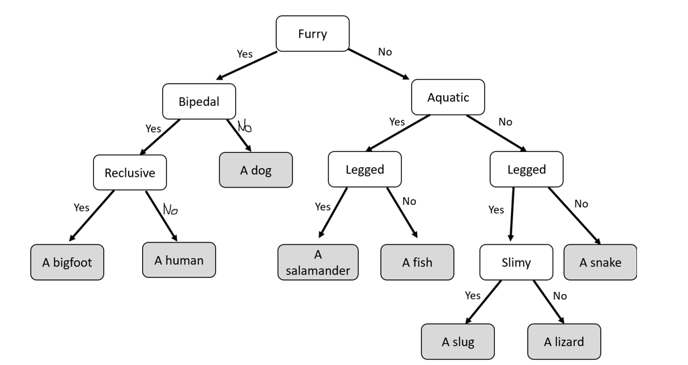
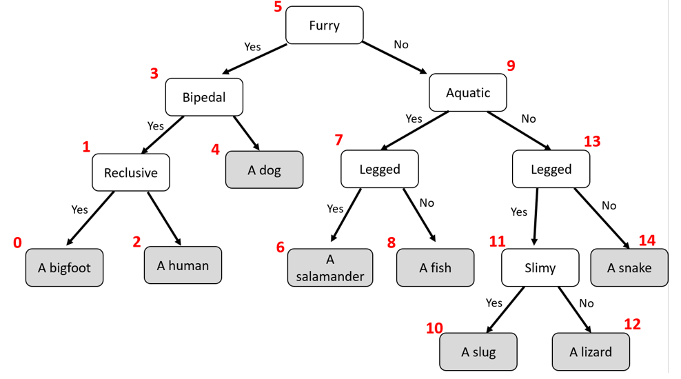

Program 1: Animal Identification Tree
Due Date and Submission Requirements
- Due Date: Tuesday, February 27th at 11:59 p.m.
- Partner Information: You are allowed to work with one partner. Both group members need to submit to D2L. Be sure to indicate in your submission who your partner is. Each Java class should have the name of each student in a comment at the top of the program
- Submission Instructions: Upload your solutions (.java files) to the BrightSpace(D2L) Program 1 Dropbox.
Background and Directions
In this program, you will build an application that uses a Binary Search Tree (BST) to identify animals. If the program is unable to identify the animal, it will gather information from the user so it can remember that animal in the future.
Animals can be classified by their characteristics (it is in the water, it doesn’t have legs, it has gills, it is a fish, etc). The user will answer a series of yes or no questions, until the program is ready to make a guess. If the programs correctly guesses the animal, the program will loop and ask if they want to identify another animal, and the process is repeated.
If the program makes an incorrect guess, it will remember this animal in future program executions.
You can imagine representing these characteristics in a tree-like structure where internal nodes are characteristics (furry, bipedal, gilled) and leaf nodes are animals (dog, human, fish). Because each characteristic can be answered with “yes” or “no”, we can represent this classification system as a binary tree (each internal node has two children).
You will read in this BST from a file, and then add nodes as you discover more animals. Knowledge gained from the user must persist between program executions, so you will need to write out to the file and update the file when new animals are discovered.
Conceptually, this is what the tree will look like (white nodes are internal, grey nodes are leaf nodes).

Part 1: Loading the BST
The first step is to write a method that constructs a baseline identification tree, which will be created from an input file that has information. Here is how the initial input file will look:
5,furry
3,bipedal
9,aquatic
1,reclusive
4,a dog
7,legged
13,legs
0,a bigfoot
2,a human
6,a salamander
8,a fish
11,slimy
14,a snake
10,a Slug
12,a Lizard
This is a breadth-first output of nodes from the BST. Each node has a Node number, and the prompt (for internal nodes) or animal (for leaf nodes).
The Node numbers were derived from an in-order traversal of nodes in the tree. Because our application is a BST, we can use these node numbers to place the nodes in their correct spots.
Notice that when node numbers are applied, you can see how this is a BST.
When we build this tree using our BST insert() method, and because we have node numbers that go along with each animal/prompt, our insert() method will always build the tree with the correct structure.

You will use the BST insert() method that we wrote in class (you may need to make slight modifications) and insert each line from the file into the tree, creating each Node object properly.
After you think you have your load method working properly, you can run a breadth-first method and verify that your tree got built properly.
Part 2: Using Tree to identify an animal
Next, you should write a method that will use the BST to identify an animal. The user will then try to identify an animal by answering queries from your application.
If your application eventually settles on the correct animal, great, if not, it will inquire as to the differentiating trait between the animal being identified and the leaf it had settled on.
NOTE: You must provide the information that I provide in my output in this circumstance (e.g. “I don’t know any furry, not squeaky, bipedal animals that aren’t a human.”). This amounts to your position in the classification tree.
It will then create a new internal node and new leaf node to represent that trait as well as the new animal. The program should loop and continue to ask the user if they would like to identify another animal. Sample
output is provided at the end of this assignment.
Part 3: Saving the Tree
You must also save your tree to a .txt file
when the program exits and reload the tree when it begins again. This enables your AI to
keep learning across sessions. If new node(s) are added to the tree during program execution, you will need to relabel your nodes, and write out each node to tree.txt, so it can remember the new nodes during the next program execution.
Input file
I am not giving you any starting code. You will develop this solution from scratch. However, I will provide you with a baseline input file that builds a basic animal identification tree.
Sample Output
You dont have to exactly match this output, but it should look very similar.
Optional Hints
You are welcome to design your solution in whichever way makes sense to you, but I would recommend having an AnimalTree, Node, and Demo class.
When a new animal is discovered, the old leaf always becomes the new right child, the new node becomes the new left child, and the new characteristic becomes the internal Node
You will likely need to have some kind of breadthFirst() and inOrder() method for labeling nodes and writing out to the file.
Do not "remove" any nodes. Simply update the text of the old leaf node with the text of the new internal node
Grading (100 points)
| Criteria |
Points |
| Tree is read in from a file (tree.txt) and constructed properly with the insert() method |
20 |
| When identifying an animal, the tree is properly traversed, and the correct prompt is asked |
10 |
| The tree is able to identify animals correctly |
20 |
| If the tree finds a new animal, it prints out the path, and then prompts the user for the new characteristic |
20 |
| The tree remembers new animals in different program executions (persistence) |
20 |
| The tree is written out to the same file (tree.txt), and includes and new animals/traits |
10 |
Program 1 solution